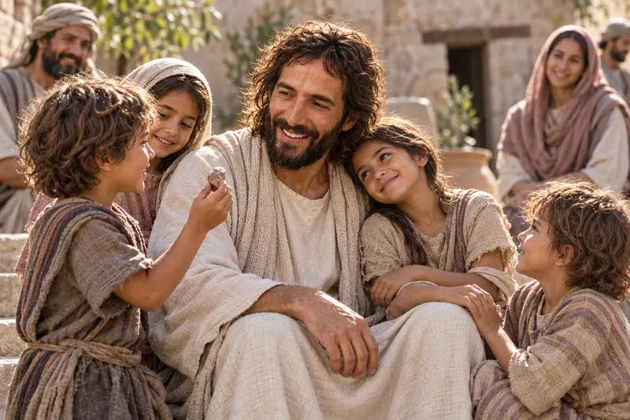
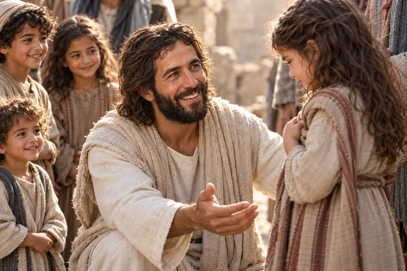
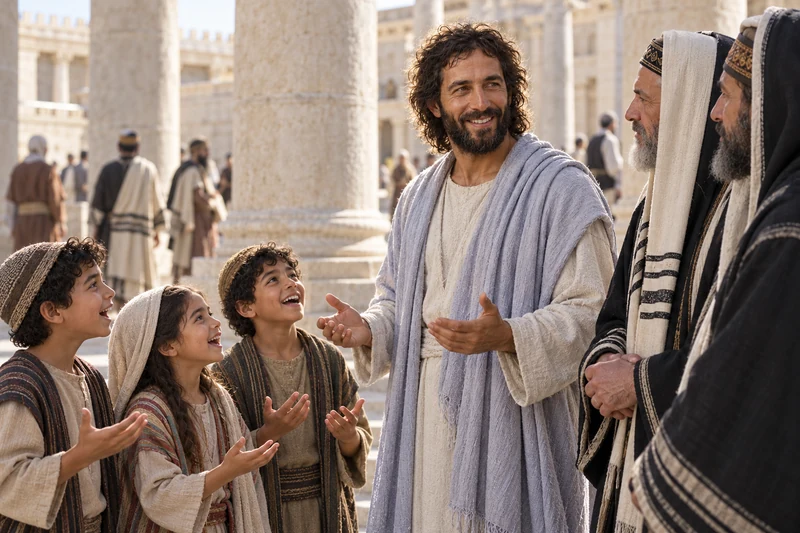
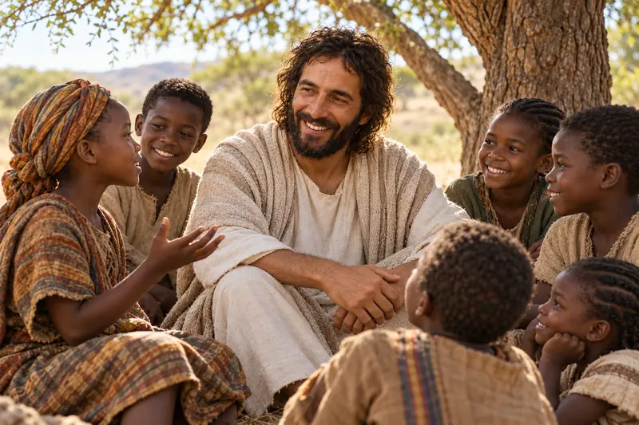
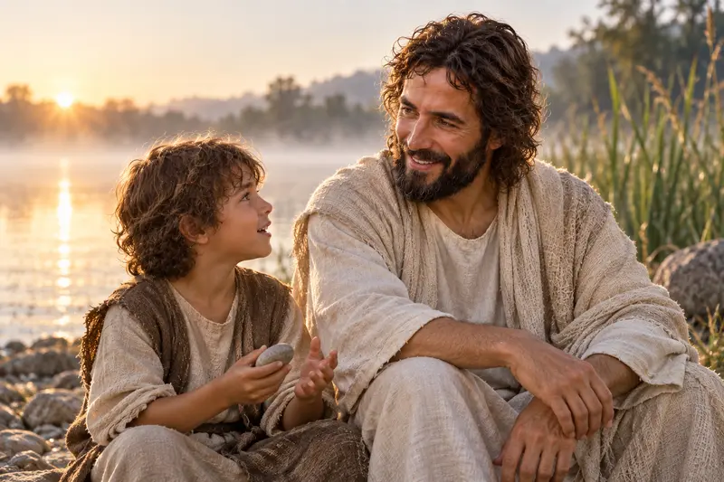
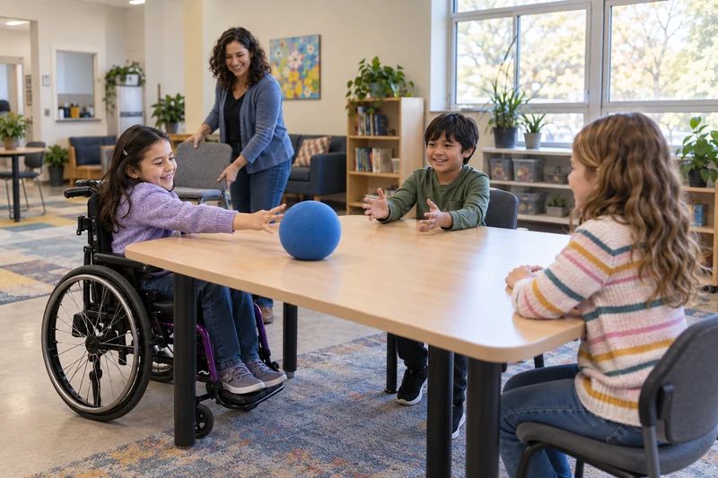
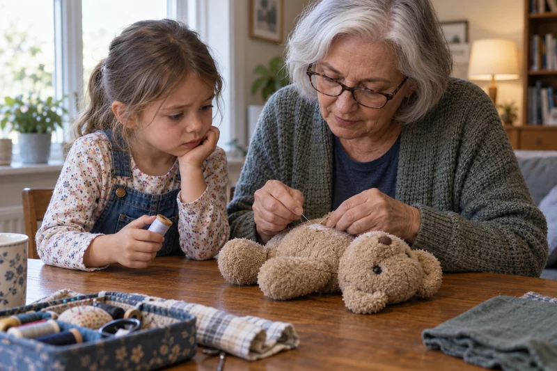
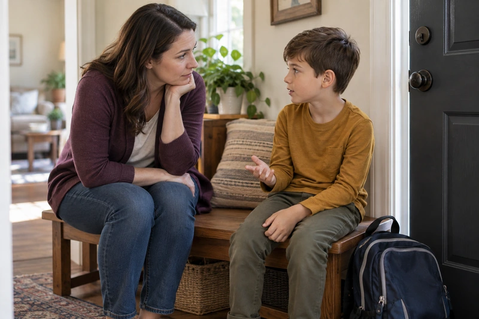
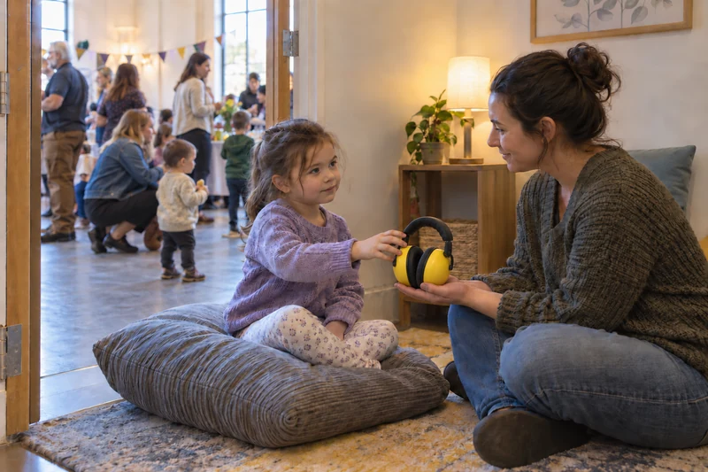

Notice each child's posture and the calm attention Jesus gives them.
Children press close to Jesus without fear. One rests against Him, another reaches toward Him, and the Savior receives their trust with complete attention.
A path through this study
Come Close Without Fear
The painting is full of touch, movement, and trust. Jesus is not speaking to a distant crowd; He is giving the children His time. The Gospel accounts make that welcome even more striking because the disciples had tried to turn them away.

Follow the movement from being rebuked at the edge to being held and blessed.
Ask what helps a child or vulnerable person feel safe, heard, and cherished.
Scripture study
He Took Them in His Arms
Read Mark 10:13-16 slowly. People bring children to Jesus so He can touch them. The disciples object, but Jesus is displeased with the barrier they create. He calls the children to Him, takes them in His arms, places His hands upon them, and blesses them. His welcome is spoken and embodied.
Jesus also teaches the adults: the kingdom of God must be received as a little child. The passage honors qualities such as trust and openness without pretending children never feel fear or pain. The adults around them carry a sacred responsibility to protect, listen, and lead with love.

A day of prayer, tears, and joy at Bountiful
In 3 Nephi 17, Jesus perceives that the people desire Him to remain. He heals their sick, asks that their little children be brought to Him, and prays for the people. The chapter lingers over compassion. Read verses 21-24 and notice what the children receive and what the gathered adults are allowed to witness.
The Children’s Praise
Matthew places the children’s praise after Jesus enters Jerusalem, cleanses the temple and heals those who come to Him there. In Matthew 21:12–16, the chief priests and scribes see His works and hear the children calling Him the Son of David. Their displeasure becomes a question directed to Jesus. Follow the sequence carefully: the children’s voices belong within a larger scene of the Savior’s authority and mercy.

Jesus acknowledges what the children are saying and answers with scripture about praise from the mouths of little ones in Matthew 21:16. He does not silence them to satisfy the objection. As you study, compare the attention given to their praise with the welcome elsewhere in Mark 10:13–16. Adults can learn from the way Jesus receives children as participants in spiritual life.
Consider: How could a child’s sincere prayer, question or testimony receive your full attention?
Look again
Every Child Drawn Near
These artworks carry the same welcome into different places and relationships. Open each one at full size before reading the scripture beside it.




A Game Everyone Can Join
The disciples have been arguing about who is greatest. Jesus answers in Mark 9:33–37 by teaching service, bringing a child among them and speaking of receiving that child in His name. The change in focus is striking. Instead of ranking themselves, the disciples are asked to recognize the importance of the person before them.

In Mark 10:13–16, Jesus responds when adults keep children from approaching Him. These accounts can guide the practical choices of a gathering today. Clear space, a reachable table and an activity shaped with the children can help them take part. Notice that the girl in the picture directs the play herself; welcome includes the opportunity to contribute and choose.
Consider: In an activity you help plan, who should be asked what would make participation easier?
A Small Thing Worth Caring For
James calls his readers to be quick to hear, slow to speak and slow to anger in James 1:19–22. He then urges them to do the word they receive. Listening is therefore more than waiting for a turn to speak. It can require setting aside a quick dismissal and giving enough attention to understand why something matters to another person.

Jesus takes a child in His arms and speaks of receiving children in His name in Mark 9:36–37. The small repair in this picture offers a place to consider that welcome in daily life. A child’s concern may seem slight to an adult, yet patient attention can communicate respect. Even when a problem cannot be repaired, a child can still be heard and accompanied.
Consider: What concern might a child need you to hear fully before you offer advice?
Quiet reflection
Receive and Protect
Use these questions for prayer, a journal, or a family conversation.
What do I see in the children's faces and hands?
Look again before answering. Notice who is reaching, resting, watching, or smiling. What does Jesus do that allows closeness and trust?
How can I listen to a child more fully?
Choose one ordinary moment this week to put distractions down, listen without interrupting, and take a child's words seriously.


What does Christlike protection require?
The Savior removed a barrier and welcomed the children. Consider whether a family, congregation, school, or community practice needs more patience, safety, or attentive care from you.
Watch, read, and reflect
A companion for your study
These official Church resources offer another way to explore this subject. Read or watch at your own pace, then return to the passages above.
Church video
President Nelson Blesses Children with the Lord’s Love
Hear a witness of Jesus Christ and His love addressed directly to children.
The Church of Jesus Christ of Latter-day Saints
Church video
Are You Really There?
See heartfelt prayers answered through peace in Jesus Christ and the care of other people.
The Church of Jesus Christ of Latter-day Saints
Room for a Quieter Moment
When the disciples turn people with children away, Jesus is displeased. In Mark 10:13–16, He calls the children near, takes them in His arms and blesses them. The adults’ behavior changes who can approach. Study the actions in the passage, then consider the practical barriers a child might encounter in a gathering you know.

Patient listening in James 1:19 can help adults understand what a child is asking for. A quieter place, a pause or a different way to join may be a useful response when chosen with the child. In this scene the open doorway keeps the gathering connected to the quiet corner. Attention can be offered without demanding the same response or pace from everyone.
Consider: How could you ask a child what would help them join comfortably, while leaving room for their answer?
Keep walking
Where Would You Like to Go Next?
Strengthen Belonging at Home
Continue into family love, responsibility, and the many forms faithful care can take.
When a Child Is Grieved
Find scripture and companionship for the sorrow of losing a child.
Follow the Good Shepherd
Continue with the Savior who knows His sheep and comes close to the wounded.